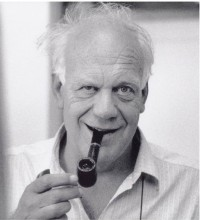

Please note: the AAS Obituaries are temporarily being hosted on this website while their full content is being ingested into the PubPub publishing platform newly adopted by the Bulletin of the American Astronomical Society. When the migration is complete, your existing links will take you to the final, migrated content. Contact peter.williams@aas.org with any questions.
Franco Pacini (1939-2012)
Franco Pacini, professor of astrophysics at the University of Florence, Italy, died on January 26, 2012 due to complications from Parkinson’s disease. The news of his sudden death immediately spread across the astronomical community both in Italy and abroad leaving a deep sorrow.
Franco was born in 1939 in Florence, but grew up in Urbino, a jewel of the Italian Renaissance about 70 miles east of Florence as the crow flies, where he now lies buried in the family tomb.
Soon after completing a curriculum in physics at the University of Rome “La Sapienza,” where he graduated in 1964, he carried out his research work mainly on neutron stars first at the Institut d'Astrophysique in Paris and then at Cornell University (Ithaca). It was precisely when at Cornell that he submitted to Nature a paper underlying the importance of a rotating magnetized neutron star, a collapsed remnant of a supernova explosion, with the magnetic axis inclined to the rotation axis as the possible energy source for the expanding envelope and related high energy phenomena. The paper was published on November 1967 (Energy emission from a neutron star, Nature, 216, 567-68) and the confirmation of his intuition came a few months later with the discovery of pulsars when the magnetic oblique rotator provided the basic model for the interpretation of this new class of objects. In a subsequent paper (Nature, July 1968) he derived the basic features of the electrodynamics of the oblique rotator model and discussed the possibility that the Crab Nebula was energized by a hidden pulsar, which indeed was finally discovered by the end of that year when the pulsating source NP 0532, with the shortest period of only 33 milliseconds, was definitely associated with the Crab Nebula. Because of these works and later contributions Franco was widely recognized as a leading expert in the field of pulsar research and high-energy astrophysics. Among his scientific achievements one should also mention the 1975 seminal paper (in collaboration with M. Harwit; ApJ, 200, L127-L129) with the suggestion, which has since proven to be basically correct, that the infrared galaxies represent evolutionary stages during which a large number of massive stars are being formed.
In 1975, Franco joined the European Southern Observatory in charge of the newly formed scientific division at the ESO HQ, then in Geneva. But in 1978 he could not resist the opportunity to return to his native town and beloved hills of the Tuscany region by accepting a position of full professor at the University of Florence, where he was also appointed Director of the Arcetri Astrophysical Observatory, one of the major Italian astronomical observatories of the Ministry of Education. From the observatory he had a full view of “Il Gioiello,” the villa in which Galileo Galilei was confined until his death after the definitive sentence (1633) of the Inquisition tribunal in Rome — admittedly a historical site able to incite unparalleled emotions to a scientist and astronomer. At that time the Arcetri Observatory was well known for solar research, but what Franco had in mind was to open up the research activities to other fields of astrophysics: in addition to solar physics, he promoted research in high-energy astrophysics, infrared astronomy, star formation, extragalactic astronomy and cosmology, and radio astronomy. But perhaps the main undertaking has been the great involvement of the observatory from the very beginnining in the project and construction of the Large Binocular Telescope (LBT) on behalf of the Italian astronomical community. The Arcetri team, lead by Franco’s close collaborator Piero Salinari, grew up both in size and competence and is now, after the successful completion of the LBT, a leader in the Adaptive Optics technology of central importance for new generation telescopes.
When Franco resigned as director in 2001 to take up a seat in the governing body of the newly formed Italian National Institute of Astrophysics, Arcetri was recognized as one of the leading astrophysical institutes in Europe. For an uninterrupted period of over two decades he was fully dedicated to the observatory – the “King of Arcetri,” as sometime he was fondly nicknamed, consistent with his dominating wide-angled view of Florence from the hilltop. Although appearing easygoing and rather informal, he was actually very determined and very selective, particularly when dealing with new entries into the observatory, and that is how he was able to build such a valuable collection of scientists in Arcetri both from Italy and abroad.
Pacini played a very important role in restructuring Italian astronomy in the past 35 years. The amendment of the law governing Italian observatories, that was adopted in 1982 and was a turning point of Italian optical astronomy, was largely due to the motivations he presented to the Ministry of Education and the pressure he exerted. He was also a strong advocate of the need for Italy to become a member State of ESO, which was finally achieved in 1982. Franco himself served for many years as Italian scientific delegate in the ESO Council, and President in the years 1991-93. Member and also chairman of various international committees, he was elected President of the IAU for the period 2001-2003. It was precisely at the IAU General Assembly in Sydney (2003) that Franco launched the idea that 2009 be declared the International Year of Astronomy (IYA) in order to adequately commemorate the 400th anniversary of the first revolutionary discoveries of Galileo Galilei. The corresponding resolution was unanimously approved by the GA, later endorsed by UNESCO and the IYA2009 finally proclaimed by the United Nations on 20 December 2007. It met with a great, worldwide success and we should be grateful to Franco for his foresight – an outstanding astrophysicist with a long-lasting impact on the development of astronomical research and culture.
Member of the Italian National Academy of the Lincei, Associate Member of the Royal Astronomical Society, member of the Academia Europeae, of the AAS and other professional astronomical societies, he received many distinguished awards, among these the title of “commendatore” of the Order for Merit of the Italian Republic, the Prize of the Presidency of the Italian Government for Science, the Honorary Citizenship of the City of Urbino and the “Fiorino d’Oro” of the City of Florence. The asteroid 25601 Francopacini was named in his honour.
Franco was very popular as a science communicator because of the public lectures he delivered in many places throughout Italy, newspaper articles and frequent appearance on TV, but his greatest attention and efforts were devoted to children since he strongly believed that astronomy is particularly suited for introducing the scientific method, thus educating a rational mind approach to problems. He liked to play astronomical and scientific games with children and they were in love with him, to the extent that several news reports of his death referred to him as the “great children’s astronomer.”
Franco Pacini is survived by his wife Rosemary Winterer, his daughter Giulia, his sons Tommaso and Giorgio and three beloved grandchildren.
Obituary written by: Giancarlo Setti
BAAS Citation: BAAS, 2012, 44, 011